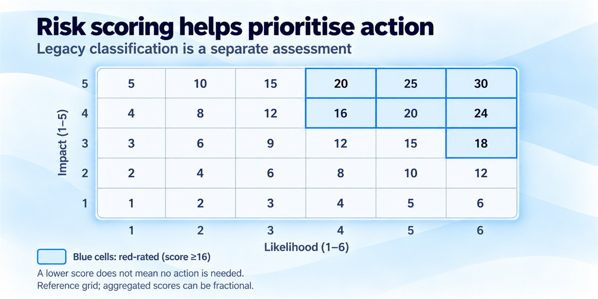
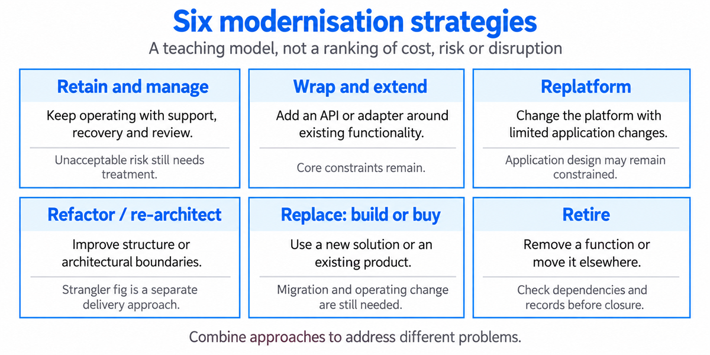
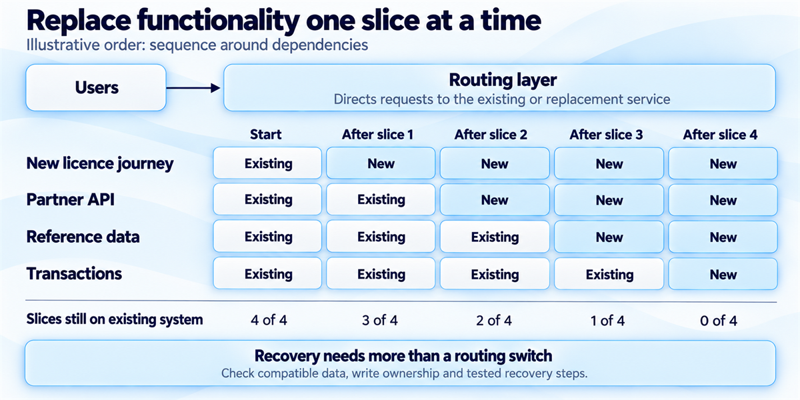
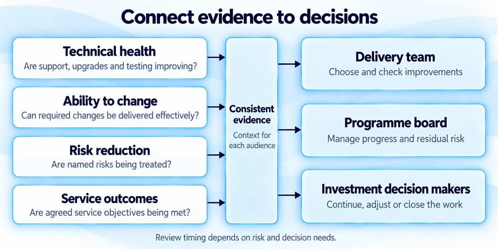
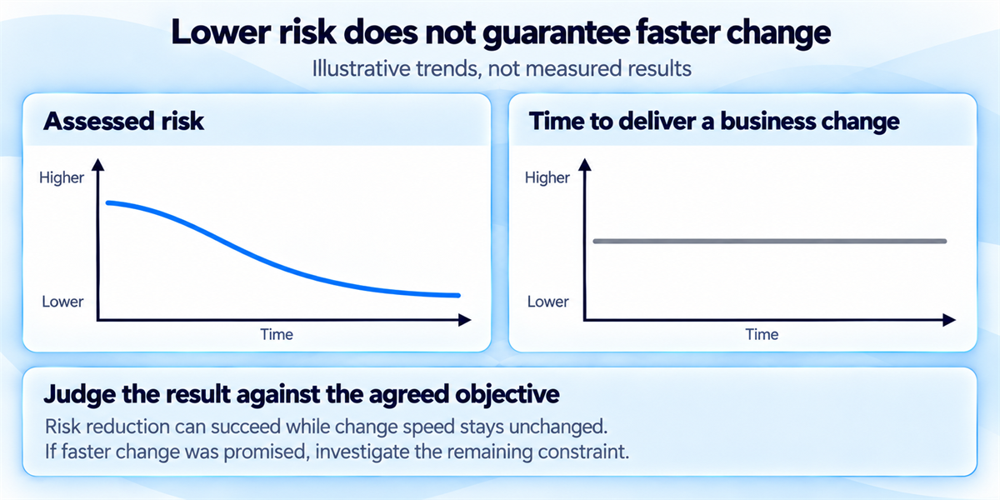

Legacy modernisation strategies: how to choose and how to deliver
Choose a legacy modernisation approach and plan a controlled transition.
You'll come away with:
- How to assess legacy status and prioritise risk
- How to choose between six practical modernisation strategies
- How to plan incremental replacement, data migration and recovery
- How to assign ownership, maintain the replacement and measure results
What makes a system legacy
A system's age does not tell you whether it needs modernising. What matters is whether it can still meet users' needs, stay supported and secure, and be maintained at an acceptable cost. The starting point is the burden it creates for the service and the risk of leaving it as it is.
Imagine a licensing service whose database is approaching the end of support. Partner organisations need an API, while staff find it difficult to change the rules for licence applications. These problems sit within the same service, but each may need a different response. Understanding them separately helps you decide what to change first.
The government's August 2026 definition of legacy IT provides a basis for that assessment. It centres on persistent, unacceptable burden or risk, and an inability to support or secure a system effectively or economically. Systems are classified as Accepted, Action-Required or Legacy. Action-Required means that, without action, the system will become legacy within 12 months; a Legacy classification requires urgent remediation.
To establish the classification, work with the risk owner through the applicable thresholds for seven criteria: support, contracts, skills, business needs, hardware, cyber security and legacy dependencies. Evidence such as missing tests or documentation helps identify areas to investigate, but does not automatically establish legacy status.
Once you understand the classification, risk scoring helps prioritise the response. Keep the evidence behind both assessments: support dates, incidents, vulnerabilities, available skills, costs and dependencies. A low combined score can hide a serious individual issue, so the assessment should lead to an agreed action, owner and review date.
Using the published risk framework
The Legacy IT Risk Assessment Framework scores seven likelihood criteria from 1–6 and six impact criteria from 1–5, over an assumed three-year period. For likelihood and impact separately, average the mean criterion score and the maximum criterion score, then multiply the two results. The maximum combined score is 30, with 16 or above red-rated.
The framework is under review to align with the new definition, which supersedes its older score-based test for identifying legacy. Confirm your organisation's current assessment and reporting arrangements before applying it. You will still see the CDDO name in the framework: CDDO merged into the Government Digital Service in January 2025.

The six strategies and what each one is for
With the problems understood, you can consider how to address them. The six strategies below provide a practical way to organise the options. They are a teaching model rather than an official, exhaustive classification; other models, such as AWS's cloud migration strategies, use distinctions including rehosting, replatforming and repurchasing.
You do not have to choose one strategy for an entire system. In the licensing example, moving the database, adding an API and replacing the application process could all form part of the same plan.

- Retain and manage. Keep the system in use, with support, monitoring, recovery arrangements and the knowledge needed to maintain it. This may be appropriate where the risk is acceptable, or as a temporary step while replacement is prepared. Any unacceptable risk still needs treatment, even if keeping the system appears cheaper.
- Wrap and extend. Add an API or adapter to make existing functionality available to other services. For the licensing service, this could give partners access without immediately replacing the core application. The core's support, security and change constraints remain, and the new interface needs suitable access controls, capacity and failure handling.
- Replatform. Move to a different platform with limited application changes, perhaps by adopting a managed database. This can address platform support and operational burdens. Moving unchanged software to different hosting is usually called rehosting; both approaches leave application design problems to be addressed separately. Modernisation can also take place without a move to the cloud.
- Refactor or re-architect. Improve the internal structure or change the boundaries between parts of the application. The aim might be to make business rules easier to change or separate a function that needs its own release cycle. In software engineering, refactoring preserves observable behaviour, although migration guidance sometimes uses the term more broadly. This work may accompany incremental replacement using the strangler fig approach described below.
- Replace. Build a new solution or adopt an existing product, including software as a service. The choice depends on how well it meets the service's needs, how it integrates, whether data can be moved in and out, and its operating costs and supplier dependencies. Replacement can happen in stages, and buying a product still involves data migration, training and changes to the way the service operates.
- Retire. Remove a system when its function is no longer needed or has been taken over elsewhere. Before switching it off, confirm that users and other systems no longer depend on it, and that records retention, archive access and disposal arrangements are in place.
The useful question is what each strategy would fix in your service. A plan might replatform an unsupported database, wrap an integration and replace an application journey that is difficult to change. The recommendation should explain how those steps work together and what risk will remain.
Choosing a strategy
Start with the outcome you need. Removing unsupported software, enabling a policy change and reducing operating costs lead to different choices, even when they concern the same system. Deadlines, service continuity, security and data protection requirements, skills, contracts and funding will shape what is feasible.
For our licensing service, an API wrapper could meet the partners' immediate need, but would leave the database's end-of-support deadline unresolved. Upgrading, replatforming or replacing the database would address that problem. If the application itself makes licence rules difficult to change, further work would be needed to improve that too.
A phased plan could therefore deal with the support deadline first, provide the partner API, then replace the parts of the application that constrain policy changes. This example illustrates how to combine approaches; the sequence for a real service would depend on its risks and dependencies.
Compare credible options against agreed criteria, using the current arrangements and their costs and risks as a baseline. Include the whole transition in your estimates: discovery, data cleansing, integration, running two systems, training, commercial exit and decommissioning. Where an assumption could change the decision, a small experiment can give you evidence before you commit to a larger programme.
The least disruptive option deserves consideration, but it may preserve the underlying problem or cost more over time. Make that trade-off visible in the recommendation, alongside the evidence, assumptions, consequences and conditions that would prompt a review.
Develop the options with operational, security, data and commercial colleagues. Their input helps establish who owns the service outcome, who can accept residual risk and who approves the funding. Record those responsibilities so the recommendation can become an authorised plan.
The strangler fig in government
Where replacement is the chosen route, changing everything at once may be difficult to justify. The strangler fig approach allows functionality to move gradually from the existing system to its replacement, with both operating during the transition.
In the licensing service, a new application journey could be the first slice. It would need a clear outcome and manageable dependencies, with its business rules, data, batch jobs and downstream consumers understood before work began. Some dependencies may need preparatory changes before the journey can be separated.

An API gateway or reverse proxy may direct requests to the appropriate system as each slice moves across. Microsoft's Strangler Fig guidance highlights the work needed around shared data and cross-system dependencies, as well as the possibility of the routing layer becoming a bottleneck or single point of failure. If requests cannot be intercepted, or the existing system must close quickly, another approach may be more suitable.
Coexistence needs its own design, funding and support. Before moving a slice, agree four things:
- How you will know it works. Agree which behaviour must be preserved and which defects or obsolete rules should change. Test representative cases, edge cases and operational performance against those requirements. Shadow testing can help compare outputs while preventing the new system from triggering real payments or other duplicate actions.
- Which system owns the data. Identify the authoritative writer for each record at every stage, then plan the initial transfer, validation and reconciliation. Where changes are synchronised, account for delays, duplicates, ordering and conflicts. Independent writes to the same records require conflict handling that has been designed and tested.
- How you will recover from failure. Agree the triggers for recovery, who makes the decision and the tested steps to follow. Once the new system accepts writes, directing traffic back may also require replaying data, reconciling records or pausing the service. Schema changes can close the rollback window, making a forward fix the safer option. State the expected recovery time and possible data loss.
- What counts as complete. Set exit criteria for each slice, maintain support for the remaining system and plan to remove temporary adapters, synchronisation and old contracts. Include this work in the business case and approval process, with enough funding to support the temporary architecture.
For the new licence journey, the important test is whether it works safely within the whole service. Staff must be able to process applications, downstream systems must receive the right information, and recovery must work with the data created since cutover.
The existing system can be retired once operational and data owners confirm that users, integrations, scheduled jobs and reporting no longer depend on it. Complete the archive, retention, recovery and disposal arrangements before closing licences, infrastructure and support obligations.
The people and contracts behind the system
Understanding those dependencies takes more than reading the code. The people who operate and maintain the service can explain difficult cases, workarounds and rules that documentation may miss. Involve them from the start, and work through which rules still serve a valid purpose.
For the licensing service, a maintainer may be able to explain why an overnight job exists or how an unusual application is handled. Give experienced staff clear roles in testing and transition, with time for knowledge transfer, training and support alongside their live-service responsibilities. Explore concerns with them rather than assuming resistance to change.
Contracts can also determine what is possible. Review access to code and data, licence restrictions, intellectual property rights, notice periods, exit charges and transition assistance with commercial and legal colleagues. The Sourcing Playbook's section on contract end calls for early exit planning, clear responsibilities and enough time for knowledge transfer. Apply that guidance alongside the rights you actually hold under the existing contract, and establish where additional agreement is needed.
Making the case for investment
Once the route and its dependencies are understood, explain what the investment will achieve. Leaders need to see the current constraint, the evidence behind it and how the proposed work will improve the service. Useful outcomes include fewer interruptions, supported technology, the ability to implement a policy change and lower whole-life cost.
Keep the claims specific. Moving the licensing database to a supported platform may reduce support risk without making licence rules quicker to change. If faster policy change is also required, show which part of the plan will deliver it and how you will measure the result.
HM Treasury's Green Book provides the basis for appraising costs, benefits and risks across options. It is mandatory for UK government departments and arm's length bodies developing proposals involving significant public spending. Work with finance and delivery colleagues on a proportionate business case that includes the cost of transition as well as the intended end state.
The Digital Assurance Playbook, section 8.7, asks assurers to check how initiatives tackle existing legacy debt or avoid creating future legacy. Use that scrutiny to strengthen the proposal, then follow the approval and funding arrangements that apply to your organisation.
Where work is phased, give each stage a useful result and clear criteria for deciding whether to continue. Include the cost of stopping safely or supporting a partly migrated service. A successful first slice provides evidence for the next investment decision; the business case should explain what further funding is needed and why.
Preventing the next generation of legacy
The replacement will need care throughout its life. Support dates, dependencies, contracts and skills will continue to change, so the transition plan should lead into continuing service responsibilities.
The government's guidance on preventing technical debt and legacy requires a legacy-proofing plan for digital products and services. It asks for a business risk owner, a technical health owner, upgrade funding and an asset register, and requires scoring of associated legacy technology. For the licensing service, that means making it clear who will monitor the replacement's health and who will fund and carry out the work it needs.
Put those responsibilities into the way the service is run:
- Plan lifecycle work. Track support dates, dependencies and upgrade responsibilities, with time and funding to act before support ends.
- Keep boundaries clear. Reduce unnecessary coupling and document interfaces so future changes are easier to assess. Weigh the ability to replace components independently against transaction, performance and operational needs.
- Understand managed services. Establish which maintenance tasks the provider takes on and which remain yours. Amazon RDS maintenance guidance, for example, describes updates, engine deprecations and maintenance that can require downtime. Plan for those changes and test compatibility.
- Maintain evidence and knowledge. Keep architecture decisions, interface documentation and runbooks current. Automate repeatable checks and test important business rules and recovery paths, so you have evidence of what works beyond a test coverage percentage.
- Plan commercial exit. Agree usable data exports, transition assistance and exit responsibilities before signing, then test whether those arrangements work in practice.
The prevention guidance was published in 2024 and still refers to the previous spend-control process. Apply its lifecycle requirements using the current Digital Assurance Playbook and your organisation's approval arrangements, alongside the updated legacy definition and the risk framework's published review notice.
Measuring whether it is working
The measures should follow the outcomes agreed at the start. Establish a baseline before making changes, and give each measure a clear scope, owner, data source and review interval. Four groups provide a useful starting point:
- Technical health: whether components are supported and ready for upgrades, with evidence that important business rules and recovery paths have been tested.
- Ability to change: how long it takes to turn an agreed business need into a working change to the service. DORA's software delivery metrics provide further measures: change lead time, deployment frequency, failed deployment recovery time, change fail rate and deployment rework rate. Change lead time begins at a code commit, so it captures only part of the journey from policy decision to delivery.
- Risk reduction: progress in treating named risks, addressing exploitable vulnerabilities, improving recovery and securing the skills needed to run the service. Reassess classification and scores using consistent scope and criteria.
- Service outcomes: availability, processing accuracy, user completion, new capabilities and whole-life cost, including the temporary cost of running both systems.

Use the same evidence to inform delivery teams, programme boards and investment decisions, with the detail and reporting frequency each decision needs. Explain changes in assessment scope or method so comparisons remain meaningful. A lower risk score should lead to a discussion of which risks have reduced and why; it cannot establish every benefit or a precise percentage reduction in risk.
For the licensing service, moving off an unsupported database could improve technical health while the time needed to change licence rules stays the same. That would meet a support-risk objective. If faster policy change was also promised, the unchanged delivery time would show that further investigation is needed.

The remaining constraint might lie in the application, approvals, testing, skills or work queues. Use the evidence to decide where to act next, rather than assuming that another technology change will solve it.
Finish each review with a decision to continue, adjust, pause or close the work. Confirm which dependencies and costs have been removed, and name the owners of the risks that remain. That keeps the programme focused on improving the service and makes it clear when the modernisation has achieved its purpose.
Sources
Last reviewed October 2026.
- Updated definition of legacy IT
- Legacy IT Risk Assessment Framework
- CDDO organisation history
- AWS migration strategies
- Martin Fowler: definition of refactoring
- Martin Fowler: Strangler Fig
- Microsoft: Strangler Fig pattern
- The Sourcing Playbook, section 13
- The Green Book (2026)
- Digital Assurance Playbook
- Prevent technical debt and legacy
- Amazon RDS: maintaining a DB instance
- DORA's software delivery performance metrics